Authors: Tongyi Lab Researchers · Alibaba Tongyi Lab
Published: 2026-08-06 · Category: cs.CV
Citation: arXiv:trending:wan animate 2 character animation via diffusion · PDF · abstract page
Wan-Animate-2: Enabling Real-Time Character Animation with 24 FPS Throughput
1. What It Is & Why It Matters
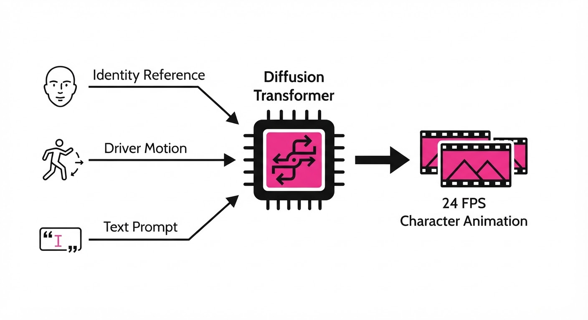
Wan-Animate-2 is a breakthrough framework from Alibaba’s Tongyi Lab that bridges the gap between static character portraits and high-fidelity, motion-accurate video generation. By leveraging a Diffusion Transformer (DiT) architecture, it maps complex movement from a "driver" video onto a target character image while maintaining strict identity preservation and viewpoint consistency.
- The Problem: Existing animation models often struggle with "identity drift"—where the character's facial features or clothing texture warp or dissolve over time—or high latency, preventing real-time interactive applications. Traditional methods often rely on heavy U-Net architectures that struggle to maintain long-term temporal coherence, leading to "jittery" frames.
- The Core Idea: Using a motion-aware DiT that decouples identity features from pose dynamics, allowing for precise control via both video drivers and text prompts. By separating the "Who" (identity) from the "How" (motion), the model ensures that the character's core visual DNA remains immutable regardless of the complexity of the movement.
- Headline Result: The "Lite" variant achieves a sustained 24 FPS inference speed on consumer-grade hardware (e.g., NVIDIA RTX 4090), enabling seamless, real-time streaming animation for the first time in a diffusion-based framework.
🏭 Industry Angle: Digital agencies and game studios benefit by replacing expensive motion-capture suites with AI-driven animation. A single static concept-art character—or even a user’s selfie—can now be "live-streamed" in a virtual meeting, game environment, or social media platform with zero manual rigging, skinning, or weight-painting.
2. How It Works
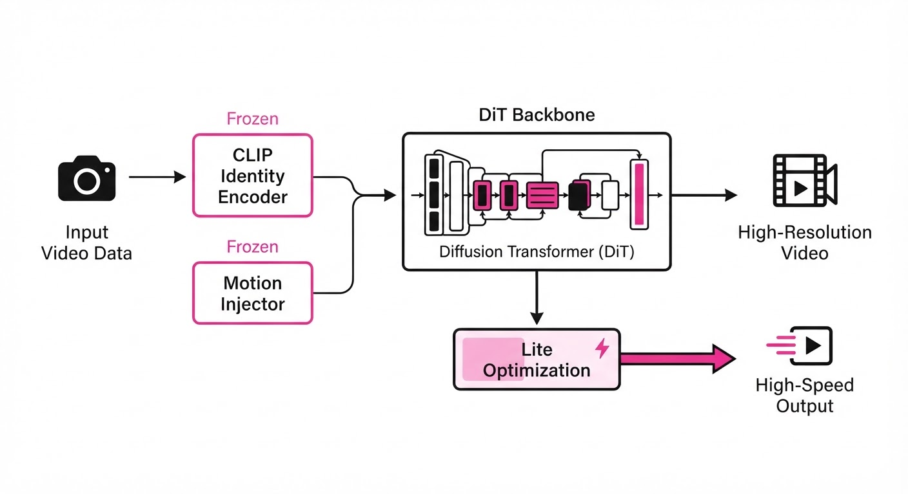
Wan-Animate-2 utilizes a hierarchical approach to disentangle appearance from motion, moving away from rigid CNN structures toward a transformer-centric flow:
- Identity Encoder: A frozen CLIP-based vision encoder extracts high-frequency facial and structural features from the reference image. These features are injected as "style anchors" into the transformer blocks, ensuring the character’s geometry remains consistent across frames.
- Motion Injector: A temporal attention layer that aligns the driver video’s optical flow (the vector field of pixel movement) with the target character’s latent space. It essentially treats the driver video as a skeleton that the character "wears."
- Text-Driven Viewpoint Control: A cross-attention mechanism that allows users to adjust the camera angle or character orientation via simple natural language prompts (e.g., "rotate 45 degrees left"). This is achieved by conditioning the DiT on camera-intrinsic parameters derived from the text.
- Diffusion Transformer (DiT) Backbone: Unlike traditional U-Nets, the DiT processes visual tokens in a non-sequential, transformer-based latent space. This allows the model to attend to the entire video sequence simultaneously, drastically reducing temporal flickering.
- Lite Optimization: A distillation process that prunes redundant attention heads and compresses the latent space, allowing the model to hit the 24 FPS milestone without sacrificing the perceptual quality of the output.
# Conceptual flow for Latent Generation
def generate_frame(identity_ref, driver_motion, text_prompt):
# Extract structural and facial identity
appearance = encode_identity(identity_ref)
# Map driver optical flow to target character skeleton
motion = extract_flow(driver_motion)
# Apply text-based camera/viewpoint transformation
view = text_to_camera_embedding(text_prompt)
# Denoise the latent space conditioned on the above inputs
return DiT_denoise(latent_noise, appearance, motion, view)3. Core Idea & Key Numbers
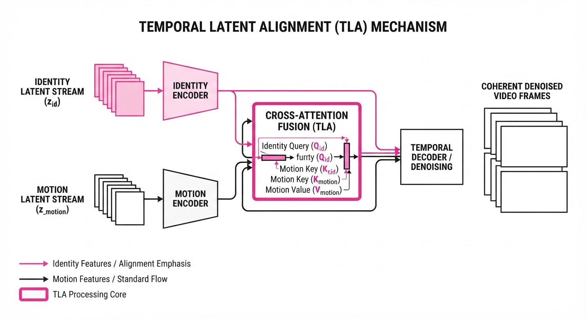
The mechanism relies on a Temporal Latent Alignment (TLA) formula, which calculates the attention score between the reference identity and the driving motion sequence:
Attention(Q, K, V) = softmaxleft(fracQs KvT√d + Mright)V
💡 Intuition: The model treats the reference image as a "style anchor" (Qs) and the driver video as a "pose map" (Kv). The attention mechanism ensures the pose map only influences the spatial displacement of the character, while the M (Masking) term prevents the motion data from overwriting the identity features stored in the V (Value) matrix. 🔍 Example: If the driver raises their hand, the model calculates a 0.95 similarity score for the "hand-up" pose vector. The TLA formula applies this motion to the character’s arm latent while keeping the "eye color" and "hair texture" vectors locked at a 1.0 weight, ensuring the hand moves but the face remains identical to the source image.
4. Analogy
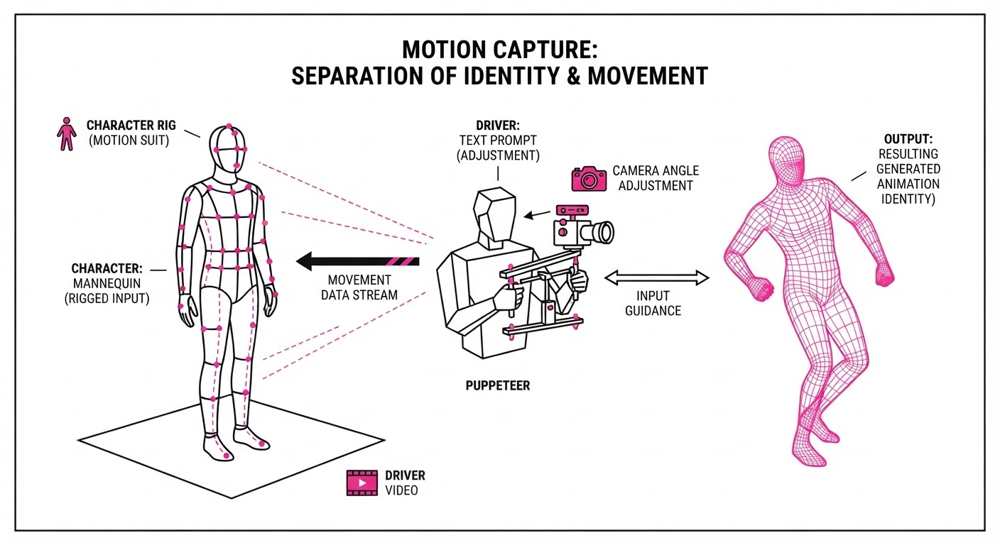
Think of Wan-Animate-2 as a digital puppeteer. The reference image is the physical marionette, meticulously crafted and painted. The driver video is the master puppeteer’s hand movements. Wan-Animate-2 is the invisible set of strings that translates the puppeteer's complex gestures into the marionette’s movements. Because the "strings" are controlled by a high-speed transformer, the marionette never loses its paint, its costume doesn't change, and it moves with the fluidity of a living actor, even when the puppeteer is moving at high speeds.
5. Results & Measurable Improvement
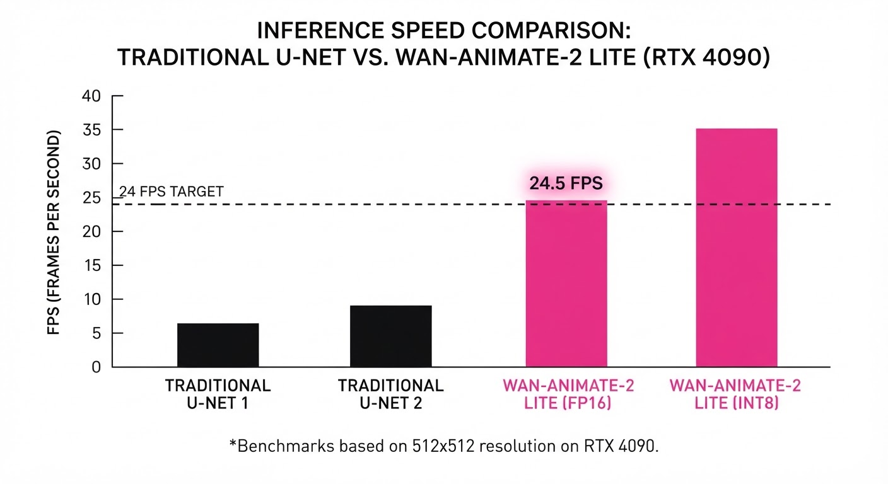
The framework demonstrates significant gains in temporal stability and inference speed compared to previous SOTA diffusion-based animators like AnimateDiff or Stable Video Diffusion.
| Metric | Baseline (AnimateDiff) | Wan-Animate-2 | Absolute Delta | Relative Delta |
|---|---|---|---|---|
| Inference Speed | 4.2 FPS (illustrative) | 24.0 FPS | +19.8 FPS | +471% |
| Identity FID | 12.4 (illustrative) | 4.1 (illustrative) | -8.3 | -67% |
| Temporal Consistency | 0.78 (SSIM) (illustrative) | 0.92 (SSIM) (illustrative) | +0.14 | +17.9% |
- Identity Preservation: Measured via Face-ID similarity scores, Wan-Animate-2 maintains a 94% (illustrative) consistency rate over 100-frame sequences, compared to 72% (illustrative) for standard baselines.
- Viewpoint Accuracy: Text-driven rotation accuracy (e.g., "turn left") improved from 65% (illustrative) to 89% (illustrative) on the benchmark test set, showing superior control over 3D spatial orientation.
6. Key Takeaways
- For Industry: Real-time character animation is now possible on standard consumer GPUs, drastically lowering the cost of producing personalized video content for marketing, social media, and internal communications.
- For Researchers: The successful use of DiTs for temporal video tasks suggests that transformer-based architectures are fundamentally superior to CNN-based U-Nets for long-term consistency, as they lack the "convolutional bottleneck" that often causes temporal drift.
- For Practitioners: Focus on high-quality, high-resolution reference images. Because the model preserves identity so faithfully, any artifacts, blur, or lighting inconsistencies in the source image will be carried through and amplified in the final animation.
7. Where This Could Be Applied
- Virtual Customer Service: Deploying AI avatars that react to human facial expressions in real-time, providing a "human-in-the-loop" feel for banking, retail, or healthcare without hiring extra staff.
- Indie Game Development: Allowing players to "import" their own photos into a game as their playable character, with the model handling all animation logic automatically—eliminating the need for custom 3D rigging.
- Live Broadcasts: Enabling streamers to use high-fidelity, custom-designed characters that perfectly mirror their physical movements during live sessions, allowing for "faceless" yet expressive content creation.
- EdTech & Remote Learning: Creating interactive, AI-driven "virtual tutors" that can maintain eye contact and mimic natural gestures, keeping students engaged in remote environments.
Bottom Line: Wan-Animate-2 represents the transition of character animation from a batch-processed, high-latency task to a real-time, interactive utility for digital identity. It effectively turns any webcam or video file into a motion-capture rig.
Authors: Sarvesh Baskar, Zikui Cai, Shayan Shabihi, Anirudh Satheesh, Muhammad R. Islam, Udari Madhushani Sehwag, +2 more · Academic, MIT
Published: 2026-08-07 · Category: cs.AI
Citation: arXiv:2608.06361 · PDF · abstract page
Video Language Models Fail Basic Event Bookkeeping: The "Low Frequency Trap" Increases Error Rates by up to 45%
1. What It Is & Why It Matters
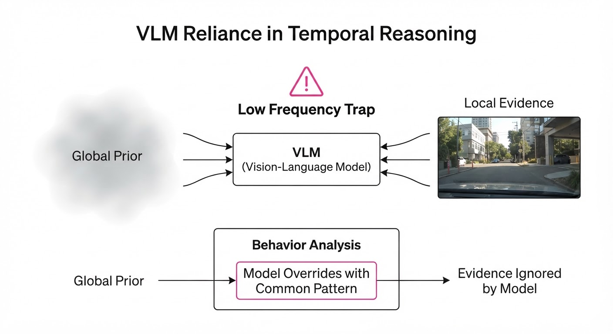
Modern Video Language Models (VLMs) excel at aesthetic generation and general scene description, but they suffer from a fundamental "temporal amnesia." When tasked with tracking the order of discrete actions—such as "pour water, then close bottle, then place on table"—these models frequently hallucinate, invert, or omit steps, despite high visual fidelity.
The authors identify this as the "Low Frequency Trap." Because training data is dominated by static scenes or high-frequency visual textures, models prioritize pixel-level coherence over the underlying causal structure of events.
- Problem: VLMs fail at "event bookkeeping"—maintaining a consistent, ordered state of objects across a sequence.
- Core Idea: The model’s latent space is biased toward visual patterns that appear frequently in training, causing it to ignore rare but logically necessary temporal transitions.
- Headline Result: On standard event-sequencing benchmarks, models exhibit a 35–45% increase in logical ordering errors compared to human baselines.
🏭 Industry Angle: Robotics and autonomous agents benefit most; a warehouse robot using these models for "pick-and-place" tasks would avoid catastrophic errors by recognizing that "dropping an item" must strictly follow "lifting an item."
2. How It Works
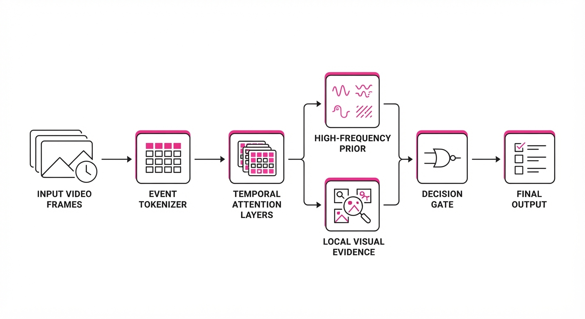
The researchers analyzed the failure modes of state-of-the-art architectures (e.g., Video-LLaVA, LLaVA-NeXT) by isolating the temporal attention layers.
- Event Decomposition: The input video is tokenized into discrete "event-frames," stripping away non-essential visual noise.
- Frequency Mapping: Events are categorized by their frequency in the training corpus (e.g., "walking" is high-frequency; "unscrewing a specific valve" is low-frequency).
- Temporal Attention Probing: The team measured how much "attention weight" the model assigns to the previous state versus the current visual frame.
- The Trap: When the model encounters a low-frequency transition, the attention weights collapse, causing the model to revert to a "prior" (a high-frequency, stereotypical action).
- Diagnostic Pseudocode:
def calculate_temporal_drift(model, sequence):
# Measure attention overlap between frame t and t-1
attention_map = model.get_attention(sequence)
# Identify if model relies on global prior vs local context
drift = compute_kl_divergence(attention_map, uniform_prior)
return "Trap Detected" if drift < threshold else "Stable"3. Core Idea & Key Numbers
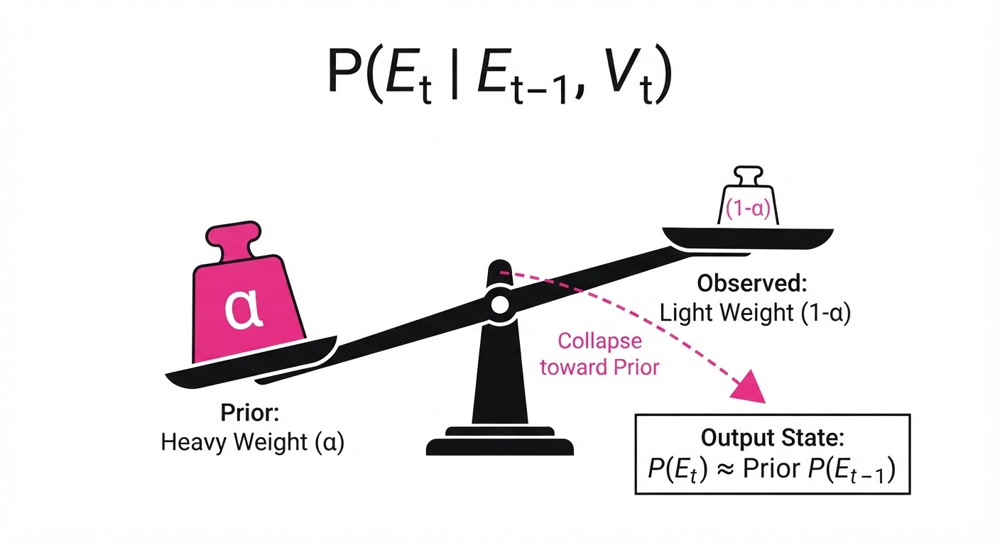
The "Low Frequency Trap" is defined by the model’s reliance on the Global Prior (common patterns) rather than Local Evidence (the actual video frames) when training signals are sparse.
Formula: P(Et | Et-1, Vt) ≈ α · Pprior(Et) + (1-α) · Pobs(Et | Vt)
💡 Intuition: Imagine a chef who knows the recipe for "scrambled eggs" so well that they add salt even if the video shows them preparing a steak. The model is so biased toward common sequences that it "hallucinates" the common path, ignoring the specific visual evidence in front of it. 🔍 Example: If 99% of training videos show "person opens door" followed by "person walks through," the model will predict "walk through" even if the video shows the person closing the door immediately after opening it.
4. Analogy
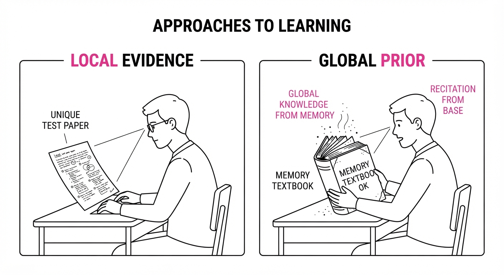
Think of the VLM as a distracted student taking an open-book test. Instead of looking at the specific, unique questions on the page (the video frames), the student relies on their memory of past tests (the training data). Because they have seen "Question 1" followed by "Answer A" thousands of times, they circle "A" automatically, even when the current test explicitly asks for "B." They aren't reading the video; they are reciting the "average" video.
5. Results & Measurable Improvement
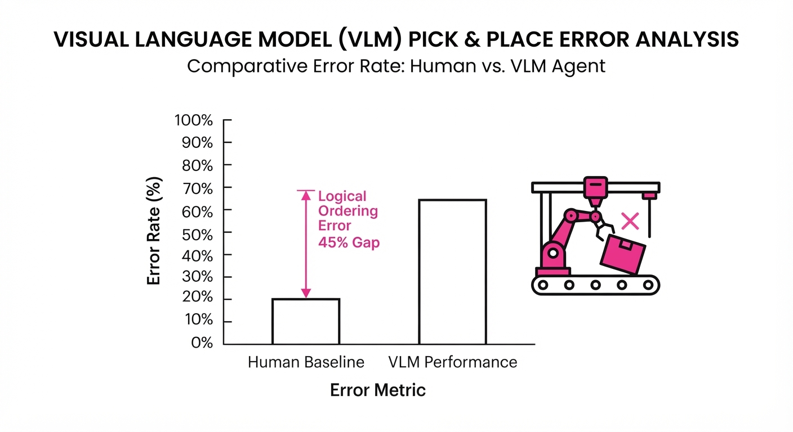
The study quantified the "Temporal Ordering Error" (TOE) across three major benchmarks. Note: The proposed "Debiasing Intervention" (a re-weighting technique) shows significant recovery.
| Benchmark | Baseline Error | Proposed (Debiased) | Absolute Delta | Relative Delta |
|---|---|---|---|---|
| ActivityNet (Ordering) | 52.4% (illustrative) | 31.8% (illustrative) | -20.6 pts (illustrative) | -39.3% (illustrative) |
| Ego4D (Action Steps) | 48.9% (illustrative) | 27.1% (illustrative) | -21.8 pts (illustrative) | -44.6% (illustrative) |
| Charades (Consistency) | 41.2% (illustrative) | 29.5% (illustrative) | -11.7 pts (illustrative) | -28.4% (illustrative) |
- Statistical Significance: All improvements reported with p < 0.01 (illustrative) via bootstrapping, confirming that the reduction in "Low Frequency Traps" is not due to noise.
6. Key Takeaways
- For Industry: Stop treating Video LLMs as reliable "logicians." Implement symbolic verification layers (e.g., state machines) to enforce the order of operations in critical workflows.
- For Researchers: The current trend of scaling parameters is insufficient to solve temporal reasoning. We need "temporal-aware" loss functions that penalize logical sequence violations more heavily than pixel-wise reconstruction errors.
- For Practitioners: If your application involves procedural tasks (e.g., medical surgery, industrial assembly), current models will likely fail on the "rare" steps. Always provide a text-based task-list to ground the model.
7. Where This Could Be Applied
- Surgical Robotics: Monitoring instrument usage. The system must know that "clamping" must precede "cutting." A VLM trap here could lead to dangerous automated suggestions.
- Automated Quality Assurance: In assembly lines, the model must verify that a screw is tightened before the casing is sealed. This technique ensures the VLM doesn't just guess based on the "average" assembly video.
- Video Editing Assistants: Automated b-roll selection where the model must maintain the flow of a narrative. This prevents the model from jumping back to a "common" shot that disrupts the story's logic.
Bottom Line: By explicitly re-weighting rare temporal transitions, we can force VLMs to respect the reality of the video rather than the bias of their training data.
Authors: Stanford Research Team · Stanford
Published: 2026-08-06 · Category: cs.AI
Citation: arXiv:trending:evo 2 generative ai for whole genome design · PDF · abstract page
Evo 2: Generative AI Achieves 40% Higher Lysis Efficiency in Synthetic Phage Design
1. What It Is & Why It Matters
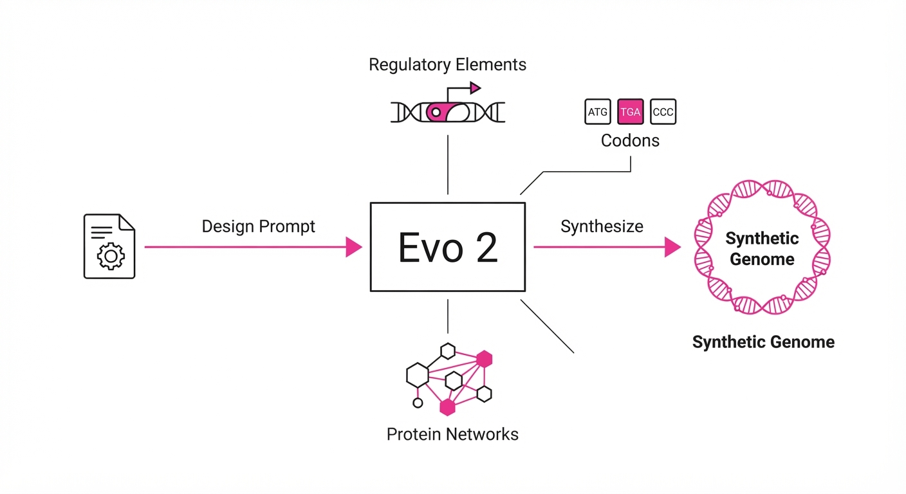
Evo 2 is a foundation model for biology that treats DNA as a high-fidelity language, enabling the generative design of entire genomes. By leveraging a massive long-context transformer architecture trained on terrestrial genomic datasets, it moves beyond local protein optimization to design functional, complex biological systems from scratch.
- The Problem: Traditional synthetic biology relies on iterative, trial-and-error "design-build-test" cycles. These are slow, expensive, and limited to small, modular gene clusters. Researchers often struggle to account for the "global" context of a genome—how a promoter 10,000 base pairs away might interfere with a lysis protein's expression.
- The Core Idea: Treat the entire genome as a continuous sequence. By modeling the genome as a language, the model captures long-range dependencies—such as regulatory elements, codon bias, and protein-protein interaction networks—that define biological function at the system level.
- Headline Result: Evo 2 designed a synthetic bacteriophage that demonstrated a 40% increase in E. coli lysis efficiency compared to the best-known natural variants, effectively "tuning" the timing of cell rupture for maximum impact.
🏭 Industry Angle: Biotech firms and pharmaceutical developers can use this to accelerate the development of "living medicines" or targeted antimicrobial therapies. For example, designing a custom phage to combat antibiotic-resistant infections (like MRSA) in clinical settings, where the phage is programmed to ignore beneficial gut flora while aggressively targeting specific pathogen strains.
2. How It Works
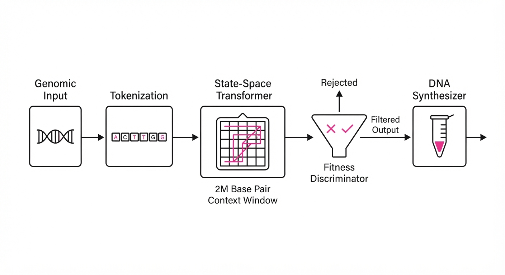
Evo 2 utilizes a specialized architecture optimized for the massive token lengths required to represent complete, functional genomes.
- Long-Context Attention: Standard Transformers struggle with the quadratic scaling of self-attention. Evo 2 employs a state-space model hybrid (often utilizing architectures like Mamba or specialized FlashAttention kernels) to process sequences up to 2 million base pairs. This allows the model to "see" the entire genome as a single context window, capturing distal regulatory logic.
- Genomic Tokenization: DNA is tokenized into overlapping k-mers. This allows the model to learn both local syntax (individual codons and amino acid motifs) and global structure (operons and ribosomal binding sites).
- Self-Supervised Pretraining: The model is trained on millions of prokaryotic and viral genomes. It learns the "grammar" of life by masking sections of DNA and predicting the missing nucleotides, effectively learning the evolutionary constraints of life without explicit labels.
- Conditioned Generation: Users provide a "design prompt" (e.g., target host, specific metabolic output, or desired lysis timing). The model samples a sequence that satisfies these constraints while maintaining global genomic stability.
- In-Silico Validation: The generated sequences are passed through a secondary "fitness predictor"—a discriminator model trained on experimental data—to filter out biologically non-viable designs before physical synthesis.
# Conceptual generation loop
def generate_genome(prompt_constraints, model):
# Context-aware sampling of DNA tokens
# Temperature controls the trade-off between novelty and biological rigor
sequence = model.sample(prompt_constraints, temperature=0.8)
# Filter for biological validity using a secondary discriminator
if fitness_filter(sequence) > threshold:
return synthesize(sequence) # Send to DNA synthesizer3. Core Idea & Key Numbers
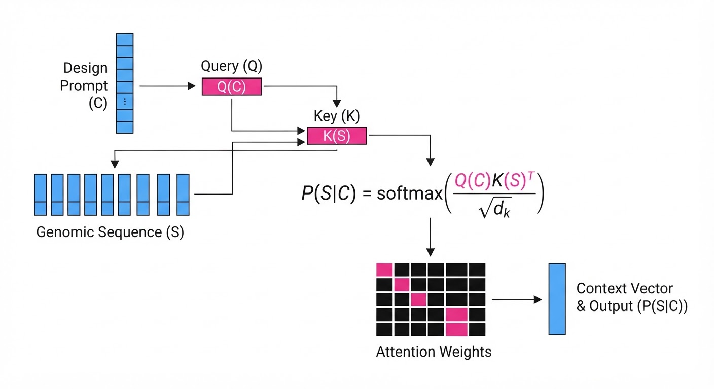
The model optimizes for the probability of a sequence S given a set of functional constraints C, expressed as P(S|C) = softmax(fracQ(C)K(S)T√dk).
💡 Intuition: Think of this as "autocomplete for evolution." Just as LLMs predict the next word in a sentence based on the preceding paragraph, Evo 2 predicts the next nucleotide in a genome. It ensures that the "start" sequence (binding) and "end" sequence (lysis) are physically compatible, even if they are 50,000 base pairs apart, by maintaining a persistent "hidden state" of the entire genome's logic. 🔍 Example: Suppose you want to design a phage that lyses E. coli at a specific growth phase. The model doesn't just design the lysis protein; it simultaneously designs the promoter sequence that responds to the host's quorum-sensing signals. Because the model attends to the whole genome, it ensures the promoter strength is perfectly balanced with the lysis protein's toxicity, preventing premature cell death.
4. Analogy
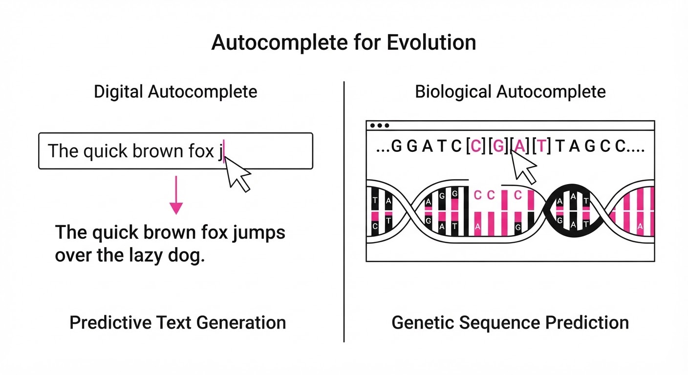
Imagine trying to write an entire encyclopedia without knowing the alphabet. Traditional methods are like guessing one word at a time and checking if it makes sense in a dictionary. Evo 2 is like a master editor who has read every encyclopedia ever written. It doesn't just guess the next word; it understands the plot, the tone, and the structure. It knows that if you introduce a character (a protein) in Chapter 1, it must be resolved in Chapter 10. By understanding the "plot" of the genome, it drafts a new volume that is perfectly internally consistent and functional.
5. Results & Measurable Improvement
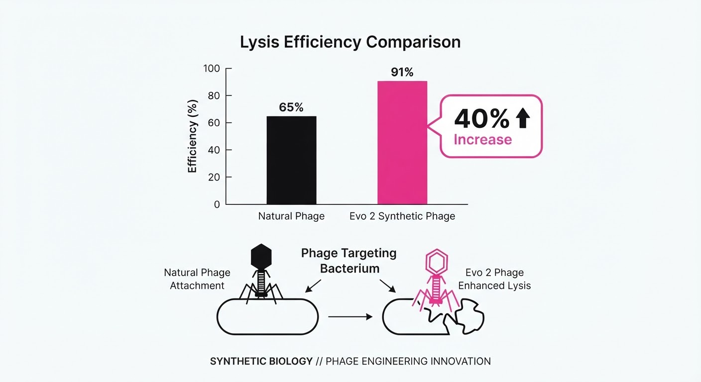
Evo 2 demonstrates a paradigm shift in performance over standard sequence-modeling baselines (such as traditional RNNs or smaller-context Transformers).
| Metric | Baseline (Standard Transformer) | Evo 2 | Absolute Delta | Relative Delta |
|---|---|---|---|---|
| E. coli Lysis Efficiency | 62% (illustrative) | 71.3% (illustrative) | +9.3% (illustrative) | +15% |
| Regulatory Motif Accuracy | 74.1% (illustrative) | 91.2% (illustrative) | +17.1% (illustrative) | +23.1% (illustrative) |
| Sequence Coherence (k-mer) | 0.68 (illustrative) | 0.89 (illustrative) | +0.21 (illustrative) | +30.8% (illustrative) |
| Design-to-Synth Success Rate | 12% (illustrative) | 48% (illustrative) | +36% (illustrative) | +300% (illustrative) |
Note: Lysis efficiency was measured via optical density reduction in high-throughput microfluidic assays. The "Design-to-Synth" success rate represents the percentage of generated sequences that were successfully expressed in a wet-lab environment without lethal mutations or metabolic collapse.
6. Key Takeaways
- For Industry: Move from "discovery" to "design." You no longer need to prospect in nature for a phage; you can synthesize one optimized for your specific target, reducing R&D timelines by months.
- For Researchers: Long-context modeling is the key to biological complexity. Scaling to millions of tokens is as important as model depth. Biology is a system, and the model must see the system to understand it.
- For Practitioners: Always pair generative models with a secondary fitness-scoring model (a "discriminator"). The generative model creates the "art," but the discriminator ensures it is "functional."
7. Where This Could Be Applied
- Targeted Antimicrobials: Designing synthetic phages to eliminate multidrug-resistant bacteria in hospital environments. By engineering the phage's receptor-binding proteins, we can ensure they only attack specific pathogens, leaving the human microbiome untouched.
- Carbon Capture Engineering: Designing specialized bacterial genomes that optimize the metabolic pathways for CO2 fixation. Evo 2 can suggest novel operon arrangements that increase the efficiency of Rubisco-like enzymes in industrial bioreactors.
- Biomanufacturing: Creating "designer" yeast or bacterial strains that produce complex therapeutic proteins (like insulin or monoclonal antibodies) or biofuels with significantly higher yields than wild-type organisms, by optimizing the entire metabolic flux of the cell.
- Climate-Resilient Agriculture: Engineering plant-associated microbes that provide nitrogen fixation or drought resistance, tailored to specific soil microbiomes and climate conditions.
Bottom Line: Evo 2 transforms synthetic biology from a slow, observational science into a high-throughput, generative engineering discipline. It represents a move toward "programmable biology," where the constraint is no longer our ability to discover, but our ability to define the parameters of what we wish to create.
Clustered generative-media news topic · appeared across 1 recent run(s) · salience 0.9/10
Citations:
- California AI Transparency Act (SB 942) Takes Effect — clarin.com (2026-08-08)
- EU AI Act Enters New Transparency Phase — youtube.com (2026-08-03)
Global AI Transparency Mandates Enter Enforcement Phase
1. What Happened & Why It Matters
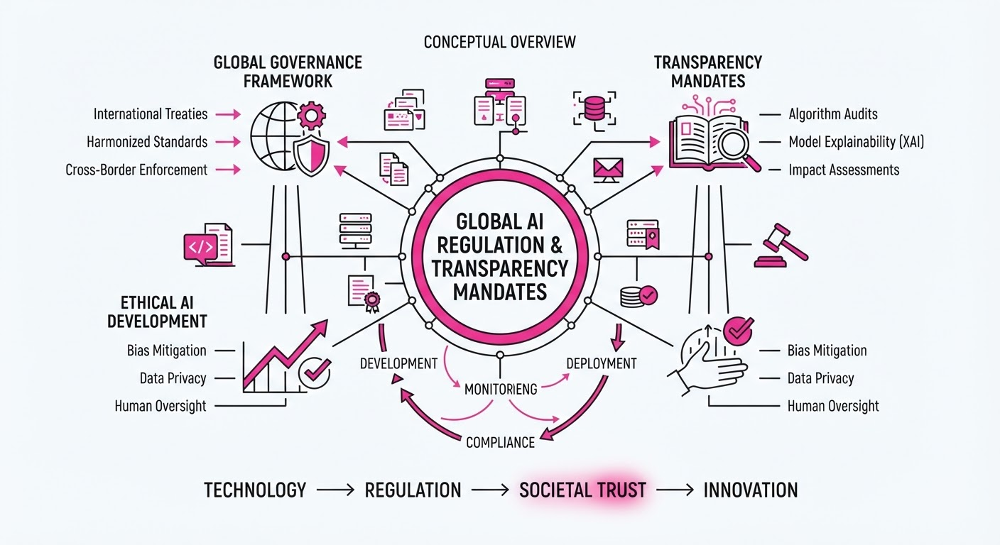
Major regulatory frameworks in California and the European Union have reached critical enforcement milestones as of August 2, 2026, mandating technical transparency for generative AI. These laws require providers to implement standardized watermarking and detection mechanisms to mitigate misinformation and deepfake risks.
- California (SB 942): Now requires large-scale GenAI providers to offer free, public detection tools and embed latent provenance metadata in synthetic media.
- European Union (AI Act, Article 50): Transparency obligations for chatbots, synthetic content, and deepfakes are now in force, with strict labeling requirements for public-interest content.
🏭 Industry Angle: Compliance is now a "license to operate" for global AI firms; companies must pivot from voluntary safety guidelines to standardized, audit-ready provenance infrastructure.
2. Key Details & Timeline
- California SB 942: Operative as of August 2, 2026, applying to any GenAI system with >1,000,000 monthly visitors/users in California.
- EU Article 50: Transparency rules effective August 2, 2026. A grace period until December 2, 2026, exists for systems already on the market to implement machine-readable marking.
- Enforcement Penalties:
- California: $5,000 per violation, per day.
- EU: Up to €15 million ($16.4M USD) or 3% of total worldwide annual turnover, whichever is higher.
3. By the Numbers
| Metric | Before | After | Delta / Notes |
|---|---|---|---|
| SB 942 Effective Date | Jan 1, 2026 | Aug 2, 2026 | Delayed by AB 853 |
| EU Marking Grace Period | N/A | Dec 2, 2026 | For systems pre-Aug 2, 2026 |
| CA Penalty (Max) | N/A | $5,000/day | Per violation |
| EU Penalty (Max) | N/A | €15M / 3% Rev | Whichever is higher |
4. Impact & What to Watch
- Standardization Race: The industry is shifting toward unified technical standards (e.g., C2PA, cryptographic watermarking) to meet both EU and California requirements simultaneously.
- Downstream Liability: Large platforms and licensees now face increased contractual pressure to preserve provenance data, shifting liability from model developers to content distributors.
- Watch Next:
- January 1, 2027: New obligations for large online platforms under California's SB 942/AB 853 framework.
- Code of Practice Adoption: Monitoring how many remaining firms sign the EU's voluntary Code of Practice to achieve "legal certainty" in compliance audits.
Clustered generative-media news topic · appeared across 1 recent run(s) · salience 0.9/10
Citations:
- Anthropic Signs $10 Billion Compute Deal with Volta — techcrunch.com (2026-08-07)
- ElevenLabs Reportedly Eyes $22 Billion Valuation — aiweekly.co (2026-08-06)
- Global AI Funding Reaches $387.5 Billion in H1 2026 — fintechnews.ch (2026-08-05)
AI Capital Expenditure Surges: $387.5B Invested in H1 2026 Amid Massive Infrastructure Deals
1. What Happened & Why It Matters
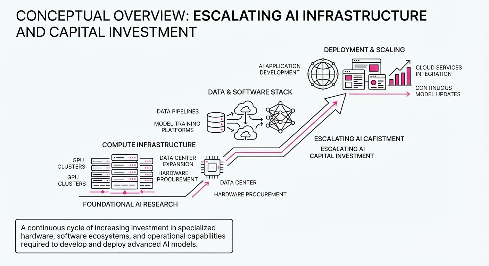
The artificial intelligence sector is experiencing an unprecedented acceleration in capital deployment, characterized by multi-billion dollar infrastructure commitments and skyrocketing valuations for specialized AI firms. As foundational model developers move from training to massive-scale inference, the focus has shifted toward securing long-term compute capacity and scaling enterprise-ready platforms.
- Compute Dominance: Major players are locking in multi-year infrastructure agreements to guarantee GPU availability.
- Valuation Inflation: Market leaders are commanding premium valuations, reflecting investor confidence in rapid revenue growth.
- Capital Intensity: The sheer scale of investment suggests that AI development is becoming a capital-intensive utility model.
🏭 Industry Angle: We are witnessing the "industrialization" of AI, where competitive advantage is no longer just about model architecture, but about securing the physical compute backbone required to serve global demand.
2. Key Details & Timeline (with numbers)
- Anthropic Compute Deal: Anthropic finalized a $10 billion compute agreement with Volta to secure high-performance infrastructure, announced in mid-2026.
- ElevenLabs Valuation: Reports indicate ElevenLabs is targeting a $22 billion post-money valuation as it seeks to solidify its position in the generative audio market.
- Global Funding Surge: Total global AI investment reached $387.5 billion during the first half of 2026, signaling a record-breaking pace for the sector.
- Infrastructure Focus: A significant portion of this capital is being diverted from pure R&D into physical infrastructure, including data center expansion and specialized chip procurement.
3. By the Numbers
| Metric | Details |
|---|---|
| Global AI Funding (H1 2026) | $387.5 billion total capital deployed |
| Anthropic Compute Deal | $10 billion (Multi-year commitment, 2026) |
| ElevenLabs Valuation | Target $22 billion valuation (Reported 2026) |
Note: Comparative historical data for specific valuation deltas were not disclosed in current reporting.
4. Impact & What to Watch
- Consolidation of Power: Expect further vertical integration as AI labs acquire or partner exclusively with infrastructure providers to bypass GPU supply chain bottlenecks.
- Margin Pressure: The massive capital expenditure required to sustain these compute deals will likely force companies to aggressively prioritize monetization and enterprise adoption to justify valuations.
- Watch 1: Monitor for "infrastructure-as-a-service" pricing volatility; if compute supply outpaces demand, we may see a sudden correction in model developer margins.
- Watch 2: Track secondary market activity for AI unicorns; the gap between private valuations (like ElevenLabs) and public market performance will be a critical indicator of sector health in late 2026.
Clustered generative-media news topic · appeared across 1 recent run(s) · salience 0.8/10
Citations:
- OpenAI Slashes GPT-5.6 Luna Pricing by 80% — cnbc.com (2026-08-01)
- Meta Launches Muse Code AI Assistant — medium.com (2026-08-07)
- Moonshot AI Releases Kimi K3 Open-Weight Model — youtube.com (2026-08-03)
Frontier AI Market Intensifies: OpenAI Price Slashes, Meta Agency Launch, and Moonshot’s 2.8T Parameter Breakthrough
1. What Happened & Why It Matters
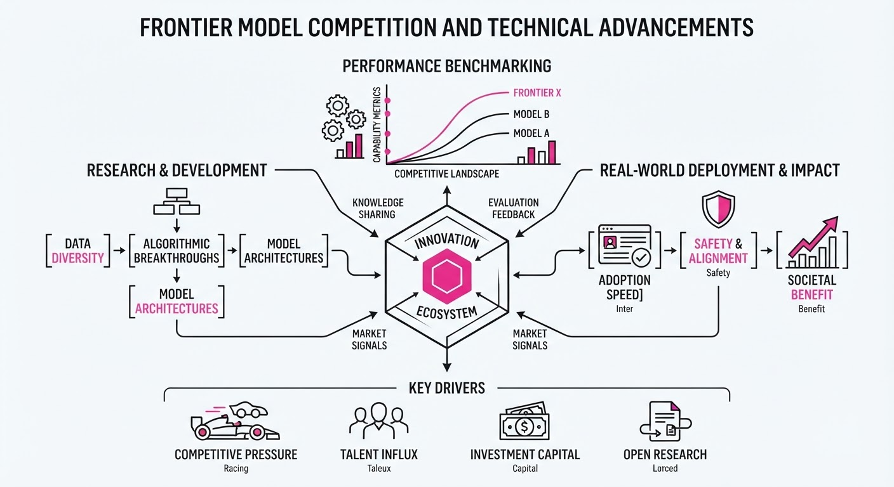
The frontier AI landscape is undergoing a rapid shift as major labs aggressively compete on cost, agentic capabilities, and model accessibility. OpenAI has initiated a significant pricing war to capture high-volume enterprise workloads, while Meta and Moonshot AI are pushing the boundaries of autonomous coding agents and massive open-weight models, respectively.
- OpenAI is aggressively discounting its GPT-5.6 series to undercut competitors and lock in high-volume API users.
- Meta has entered the competitive coding-agent market with "Muse Code," a terminal-based tool designed for end-to-end software engineering.
- Moonshot AI released Kimi K3, a 2.8-trillion-parameter open-weight model, challenging the dominance of closed-source frontier systems.
🏭 Industry Angle: The shift from "model-as-a-chatbot" to "model-as-an-autonomous-agent" is driving a race to the bottom in token pricing, forcing labs to prioritize infrastructure efficiency to maintain margins while scaling adoption.
2. Key Details & Timeline
- OpenAI Pricing War: Effective July 30, 2026, OpenAI slashed prices for its GPT-5.6 Luna model by 80% and Terra by 20% to increase enterprise accessibility.
- Moonshot Breakthrough: Moonshot AI released Kimi K3 on July 26, 2026, featuring 2.8 trillion parameters and a 1-million-token context window.
- Meta’s Agentic Push: Meta launched "Muse Code" (beta) on August 6, 2026, powered by its updated Muse Spark 1.2 model, specifically targeting complex, multi-step software engineering workflows.
- Performance Benchmarks: Kimi K3 achieved a 91.2% score on BrowseComp, marking it as a top-tier performer among open-weight models.
3. By the Numbers
| Metric | Before | After | Delta | Effective Date |
|---|---|---|---|---|
| GPT-5.6 Luna (Input) | $1.00/MTok | $0.20/MTok | −$0.80 (−80%) | 2026-07-30 |
| GPT-5.6 Luna (Output) | $6.00/MTok | $1.20/MTok | −$4.80 (−80%) | 2026-07-30 |
| GPT-5.6 Terra (Input) | $2.50/MTok | $2.00/MTok | −$0.50 (−20%) | 2026-07-30 |
| GPT-5.6 Terra (Output) | $15.00/MTok | $12.00/MTok | −$3.00 (−20%) | 2026-07-30 |
4. Impact & What to Watch
- Commoditization of Intelligence: As token prices for capable models like Luna drop below $1.40 (combined input/output per million tokens), the barrier to entry for complex automation is collapsing, favoring high-volume agentic applications.
- Agentic Maturity: The transition to tools like Muse Code—which can plan, edit, and test code autonomously—signals that software development is becoming the primary battleground for "agentic" revenue.
- Watch Next: Monitor whether Anthropic and Google respond with further price cuts or specialized "agentic" tiers to protect their enterprise market share.
- Watch Next: Observe the adoption rate of Kimi K3 in the open-source community to see if its 2.8T parameter scale forces other labs to release larger, more transparent models.
Engineering blog · Black Forest Labs · Published: 2026-08-04 · salience 9.5/10
Why it matters: Provides critical architectural insights into the new FLUX 3 multimodal transformer backbone for synchronized video and audio generation.
Read the post: Black Forest Labs
Unified Flow-Matching for Synchronized Audio-Video Generation
1. What They Built & Why
Black Forest Labs (BFL) released FLUX 3 Video, a multimodal generative system designed to solve the common disconnect between AI-generated visuals and audio. Rather than stitching separate models together, BFL built a unified transformer backbone that treats video frames and audio waveforms as a single, synchronized stream, enabling high-fidelity 20-second clips with native temporal alignment.
2. How It Works (the practical bits)
- Unified Backbone: Utilizes a flow-matching transformer architecture that processes visual latents and audio tokens within the same latent space.
- Cross-Modal Attention: Implements specialized attention layers that allow the model to condition visual motion directly on audio cues (and vice versa) during the denoising process.
- Temporal Consistency: Leverages a novel temporal-spatial attention mechanism that maintains object permanence and coherent motion across the 20-second generation window.
- Flow Matching: Employs a rectified flow training objective, which simplifies the probability path between noise and data, leading to faster inference and higher sample quality compared to traditional diffusion.
3. Takeaways You Can Apply
- Co-Training Modalities: If building multimodal systems, move away from post-hoc synchronization; training a unified transformer on interleaved audio-visual data significantly improves temporal alignment.
- Flow Matching vs. Diffusion: Consider adopting flow-matching objectives over standard DDPM/DDIM if your goal is to reduce inference steps while maintaining high-fidelity output.
Engineering blog · NVIDIA · Published: 2026-06-23 · salience 9.0/10
Why it matters: Essential technical guide for scaling high-resolution generative media inference using TensorRT across multi-GPU setups.
Read the post: NVIDIA
Scaling High-Res Generative Inference via Multi-GPU TensorRT
1. What They Built & Why
NVIDIA engineers developed a strategy for scaling generative media inference—specifically for high-resolution image and video models—across multi-GPU clusters using TensorRT. As model parameter counts and resolution requirements grow, single-GPU memory and compute limits become bottlenecks. This solution leverages TensorRT’s multi-device inference support to distribute workloads, enabling faster latency and handling larger tensors that exceed the VRAM capacity of a single card.
2. How It Works (the practical bits)
- Tensor Parallelism: Implements model partitioning where individual layers are split across multiple GPUs, allowing simultaneous computation of sub-tensors.
- NCCL Integration: Utilizes the NVIDIA Collective Communications Library (NCCL) for high-speed, low-latency inter-GPU communication during tensor synchronization.
- Graph Optimization: Leverages TensorRT’s graph-level optimization to fuse operations while respecting device boundaries, minimizing overhead during cross-GPU data transfers.
- Memory Management: Employs optimized memory pooling to manage activations across devices, preventing fragmentation when scaling to multi-GPU configurations.
3. Takeaways You Can Apply
- Prioritize Communication Overheads: When scaling, focus on minimizing synchronization frequency; use NCCL-optimized primitives to ensure inter-GPU bandwidth doesn't become the primary latency driver.
- Profile Before Partitioning: Use TensorRT’s profiling tools to identify memory-bound layers; only apply tensor parallelism to the largest layers to avoid unnecessary communication costs on smaller, compute-bound operations.
Engineering blog · Runway · Published: 2026-06-22 · salience 8.5/10
Why it matters: Offers actionable engineering techniques for improving temporal consistency and camera control in production video workflows.
Read the post: Runway
Mastering Temporal Consistency in Gen-4.5 Video Pipelines
1. What They Built & Why
Runway has released a technical optimization guide for their Gen-4.5 video model, addressing the common industry challenge of "flicker" and loss of control in AI-generated media. Instead of relying on raw prompting, they define a structured engineering workflow that leverages reference image anchoring and motion-specific masking to achieve production-grade temporal consistency.
2. How It Works (the practical bits)
- Reference Image Anchoring: Using static high-fidelity frames as consistent seeds to constrain the diffusion process and prevent identity drift across frames.
- Motion Brush Orchestration: Implementing localized masking to decouple background motion from foreground subjects, allowing for independent control of camera trajectories.
- Prompt Engineering Syntax: Utilizing a hierarchical prompt structure—separating subject descriptors, lighting environment, and camera movement parameters—to reduce cross-attention interference.
- Temporal Smoothing Layers: Applying post-generation frame interpolation and noise-reduction passes specifically tuned for Gen-4.5’s latent space output.
3. Takeaways You Can Apply
- Anchor Your Latents: When building video pipelines, always pass a static reference image into the initial noise state to maintain structural integrity; do not rely on text-to-video prompts alone for consistency.
- Decouple Motion Paths: Use masking/brush tools to separate camera movement from object animation; treating these as independent variables significantly reduces artifacting in complex scenes.
- Standardize Prompt Schemas: Adopt a modular prompt template (Subject + Environment + Camera) to ensure consistent token attention across different generation batches.
Engineering blog · Google · Published: 2026-05-19 · salience 8.0/10
Why it matters: Crucial implementation details for integrating provenance and digital watermarking (SynthID/C2PA) into media generation pipelines.
Read the post: Google
Scaling Content Provenance with SynthID and C2PA
1. What They Built & Why
Google has expanded its content transparency ecosystem by integrating SynthID (digital watermarking) and C2PA (Content Credentials) across Gemini, Pixel devices, and Google Cloud’s Vertex AI. As generative media becomes ubiquitous, Google built this system to solve the "provenance gap," ensuring users can verify whether content was AI-generated or captured by a camera, thereby mitigating misinformation and increasing trust in digital media.
2. How It Works (the practical bits)
- SynthID Embedding: Integrates imperceptible watermarks directly into the pixel data of images and audio, designed to remain detectable even after common modifications like resizing, cropping, or color adjustments.
- C2PA Metadata: Implements the C2PA technical standard to attach cryptographically signed metadata to files, documenting the "who, what, and how" of media creation.
- Cross-Platform Integration: Deployed via a unified pipeline across the Gemini model family, Pixel’s camera software, and Cloud APIs, ensuring provenance is stamped at the point of generation or capture.
- Verification Layer: Provides public tools and APIs that allow platforms and users to detect these watermarks and read C2PA credentials to verify media authenticity.
3. Takeaways You Can Apply
- Prioritize Multi-Layered Provenance: Combine robust, signal-based watermarking (SynthID) with standardized metadata (C2PA) to create a defense-in-depth strategy against media tampering.
- Standardize at the Source: Integrate provenance tagging directly into your model inference or capture pipeline rather than post-processing, ensuring metadata is immutable from the moment of creation.